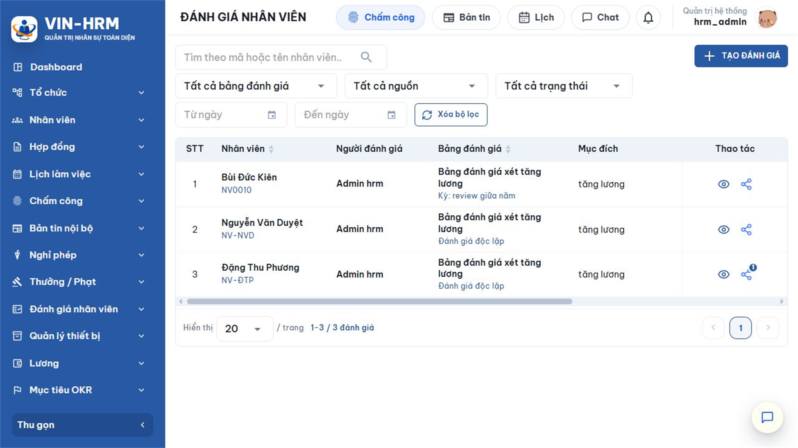
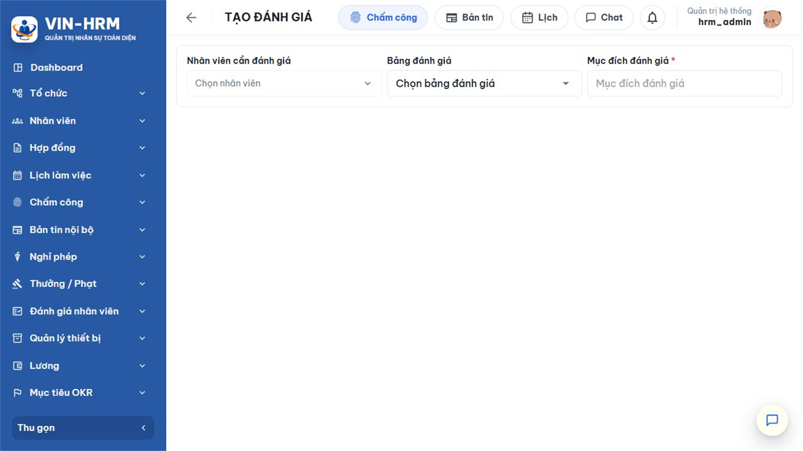
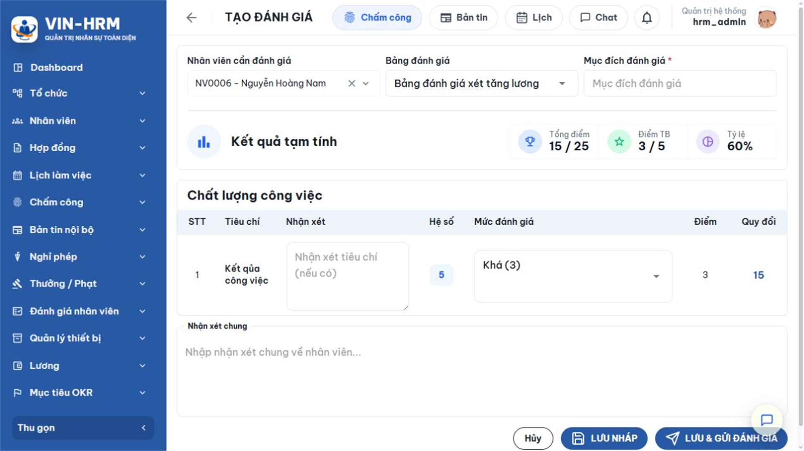
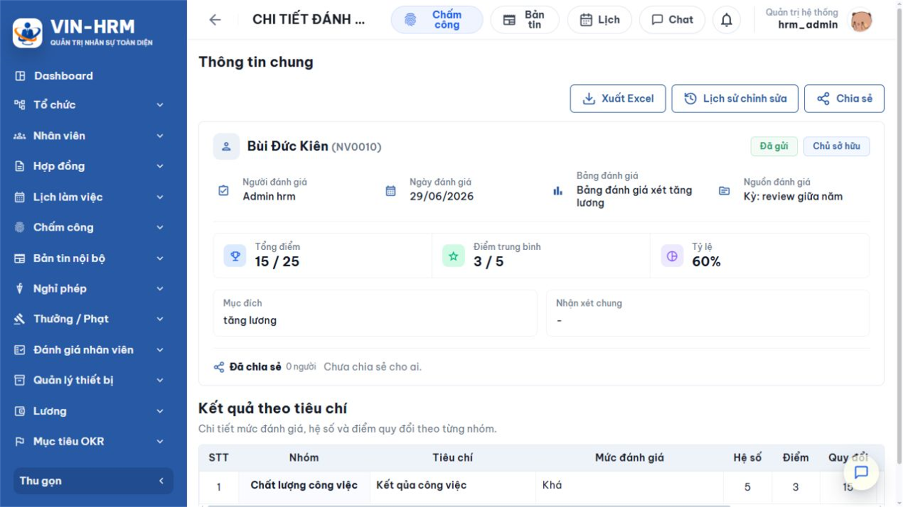
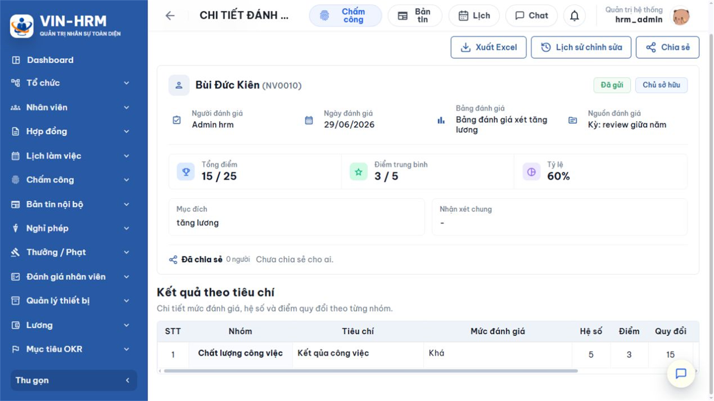
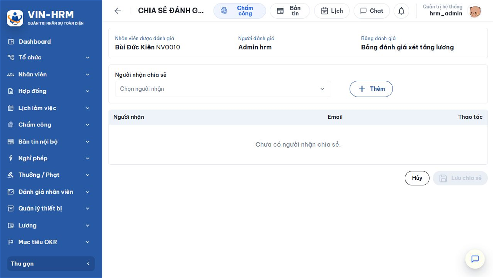

1. Mục đích, các hình thức và luồng nghiệp vụ
Chức năng Đánh giá nhân viên ghi nhận kết quả chấm của một người theo một Bảng đánh giá đã thiết lập. Người đánh giá chọn mức cho từng tiêu chí, nhập nhận xét và kiểm tra Tổng điểm, Điểm trung bình, Tỷ lệ trước khi lưu. Phiếu có thể được tạo độc lập hoặc phát sinh từ một Kỳ đánh giá.
1.1. So sánh hai hình thức
| Nội dung | Đánh giá độc lập | Đánh giá trong kỳ |
|---|---|---|
| Mục đích | Đánh giá phát sinh riêng, không cần quản lý theo đợt. | Đánh giá một người thuộc kế hoạch có danh sách, thời gian và phân loại chung. |
| Cách bắt đầu | Từ Đánh giá nhân viên → TẠO ĐÁNH GIÁ. | Từ chi tiết Kỳ đánh giá → dòng nhân viên Chưa đánh giá → nút Đánh giá. |
| Nhân viên, Bảng | Người dùng chọn theo phạm vi quyền. | Được kỳ truyền sẵn và phải khớp với kỳ. |
| Lưu nháp | Có, để hoàn thiện sau. | Không; phải Lưu và gửi trực tiếp. |
| Phân loại | Hiển thị điểm và tỷ lệ; không tự gán mức của một kỳ. | Sau khi gửi, hệ thống gán mức kết quả theo quy tắc của kỳ. |
1.2. Luồng đánh giá tổng quát
| 1. Chọn cách bắt đầu Đánh giá độc lập từ danh sách HOẶC đánh giá trong Kỳ từ dòng nhân viên. |
| ↓ |
| 2. Xác định người và Bảng đánh giá Độc lập: tự chọn → Trong kỳ: hệ thống điền sẵn. |
| ↓ |
| 3. Chấm từng tiêu chí Đọc mô tả → chọn mức → nhập nhận xét tiêu chí → quan sát điểm quy đổi. |
| ↓ |
| 4. Kiểm tra kết quả Tổng điểm → Điểm TB → Tỷ lệ → nhận xét chung. |
| ↓ |
| 5. Lưu Độc lập: Lưu nháp hoặc Lưu & gửi → Trong kỳ: Lưu & gửi. |
| ↓ |
| 6. Sử dụng kết quả Xem chi tiết → lịch sử → xuất Excel → chia sẻ theo quyền. |
2. Điều kiện, phân quyền và phạm vi dữ liệu
2.1. Điều kiện sử dụng
- Có quyền Evaluation.Create hoặc Evaluation.DirectManager.
- Có ít nhất một Bảng đánh giá Đang hoạt động, gồm nhóm, tiêu chí, hệ số và mức điểm đang hoạt động.
- Nhân viên cần đánh giá đang làm việc, không phải tài khoản Master và nằm trong phạm vi của người đánh giá.
- Đối với đánh giá trong kỳ: kỳ Đang mở, nhân viên thuộc danh sách, chưa có phiếu trong kỳ và người thao tác là người tạo kỳ.
2.2. Ý nghĩa quyền và phạm vi
| Quyền | Cho phép | Phạm vi |
|---|---|---|
| Evaluation.Create | Tạo đánh giá theo phạm vi được cấu hình. | Nếu quyền có phạm vi toàn bộ thì chọn được nhân viên toàn doanh nghiệp; nếu giới hạn theo phòng ban thì chỉ chọn đúng phòng ban. Tài khoản có quyền này cũng có thể tự đánh giá nếu dữ liệu cho phép. |
| Evaluation.DirectManager | Đánh giá nhân viên do mình quản lý trực tiếp. | Dựa trên người quản lý trực tiếp trong thông tin công việc đang hiệu lực; hệ thống cũng có thể cho người dùng thấy chính mình theo quy tắc hiện tại. |
| Evaluation.Template | Thiết kế Bảng đánh giá. | Không tự cấp quyền tạo phiếu. Chỉ cần cho người chịu trách nhiệm cấu hình mẫu. |
| Nhân viên không mặc nhiên xem kết quả của chính mình Phiếu chỉ hiển thị cho người đánh giá là chủ sở hữu hoặc người đã được chia sẻ. Nếu doanh nghiệp muốn nhân viên xem kết quả, người sở hữu phải chia sẻ quyền xem theo quy trình nội bộ. |
Chức năng không có công tắc cấu hình hệ thống riêng. Bảng đánh giá, Kỳ đánh giá, trạng thái phiếu, quyền và phạm vi phòng ban/quản lý trực tiếp là các cấu hình nghiệp vụ ảnh hưởng trực tiếp.
3. Danh sách Đánh giá nhân viên
Mở Đánh giá nhân viên > Đánh giá nhân viên.

| Khu vực | Cách sử dụng |
|---|---|
| Từ khóa | Tìm theo thông tin nhân viên hoặc nội dung liên quan được hỗ trợ. |
| Khoảng ngày | Lọc theo ngày đánh giá. Dùng Xóa bộ lọc để bỏ toàn bộ điều kiện. |
| Nhân viên | Lọc một người cụ thể trong phạm vi có thể xem. |
| Bảng đánh giá | Lọc các phiếu sử dụng cùng một mẫu. |
| Kỳ đánh giá | Chọn một kỳ cụ thể, tất cả kỳ hoặc Đánh giá độc lập. |
| Mục đích – Trạng thái | Lọc theo mục đích và Nháp, Đã gửi, Đã hủy. |
| Phạm vi xem | Tùy giao diện có thể lọc phiếu của tôi hoặc phiếu được chia sẻ. |
| Kết quả | Hiển thị Tỷ lệ và Điểm TB. Cột Quyền cho biết Owner/Chủ sở hữu hoặc quyền được chia sẻ. |
| Thao tác | Mở xem; với phiếu thuộc sở hữu có thể Chia sẻ. Sửa/Xóa chỉ xuất hiện khi trạng thái và quyền cho phép. |
4. Tạo đánh giá độc lập
Chọn TẠO ĐÁNH GIÁ. Ban đầu biểu mẫu yêu cầu chọn nhân viên, Bảng đánh giá và nhập mục đích.

4.1. Ý nghĩa các trường đầu phiếu
| Trường | Quy tắc | Ý nghĩa |
|---|---|---|
| Nhân viên cần đánh giá | Bắt buộc | Chỉ hiển thị nhân viên đang hoạt động thuộc phạm vi. Kiểm tra mã và họ tên để tránh nhầm người trùng tên. |
| Bảng đánh giá | Bắt buộc | Chọn mẫu phù hợp mục đích. Danh sách chỉ đưa ra bảng có thể sử dụng. Khi đổi bảng, toàn bộ tiêu chí và mức chấm thay đổi. |
| Mục đích đánh giá | Bắt buộc trên giao diện, tối đa 500 ký tự | Ghi rõ lý do, ví dụ “Đánh giá kết quả thử việc tháng 8/2026” hoặc “Đánh giá phục vụ xét tăng lương”. |
| Nhận xét tiêu chí | Không bắt buộc, tối đa 1.000 ký tự mỗi tiêu chí | Ghi bằng chứng, kết quả hoặc ví dụ cụ thể giải thích mức đã chọn. |
| Nhận xét chung | Không bắt buộc, tối đa 2.000 ký tự | Tóm tắt điểm mạnh, nội dung cần cải thiện và đề xuất hành động. |
| Nên chuẩn bị bằng chứng trước khi chấm Căn cứ có thể là kết quả công việc, chỉ tiêu, phản hồi khách hàng, biên bản, tiến độ dự án hoặc dữ liệu đã được xác minh. Không dùng thông tin ngoài phạm vi kỳ hoặc đánh giá dựa trên một sự việc đơn lẻ nếu chính sách không quy định. |
5. Chấm tiêu chí và đọc kết quả tạm tính
Sau khi chọn Bảng đánh giá, hệ thống hiển thị các Nhóm và Tiêu chí đang hoạt động. Mỗi dòng có Hệ số, ô chọn Mức đánh giá, Điểm và Quy đổi.

5.1. Cách chấm
- Đọc tên và mô tả của tiêu chí.
- Nhập nhận xét tiêu chí nếu cần giải thích bằng chứng.
- Mở ô Mức đánh giá và chọn mức phù hợp; số trong ngoặc là điểm của mức.
- Kiểm tra cột Điểm và Quy đổi. Quy đổi = Điểm × Hệ số.
- Lặp lại với toàn bộ tiêu chí trong mọi nhóm.
- Đọc lại Tổng điểm, Điểm TB và Tỷ lệ; nhập Nhận xét chung.
5.2. Ý nghĩa ba kết quả
| Kết quả | Công thức | Cách hiểu |
|---|---|---|
| Tổng điểm | Tổng (Điểm mức × Hệ số) | Cho biết tổng điểm có xét mức quan trọng. Giao diện hiển thị “đạt được / tối đa”. |
| Điểm TB | Tổng điểm ÷ Tổng hệ số | Đưa kết quả về thang điểm trung bình; hiển thị “đạt được / điểm TB tối đa”. |
| Tỷ lệ | Tổng điểm ÷ Điểm tối đa × 100 | Chuẩn hóa về 0–100%, phù hợp so sánh các kết quả dùng thang khác nhau. |
Ví dụ hình minh họa: tiêu chí có Hệ số 5, chọn mức Khá (3) → Quy đổi 15. Nếu điểm tối đa của tiêu chí là 5, điểm tối đa quy đổi là 25; tỷ lệ hiện tại là 15/25 = 60% và Điểm TB là 15/5 = 3.
| Kết quả tạm tính không thay thế việc đọc từng tiêu chí Điểm tổng có thể giống nhau nhưng hình thành từ các điểm mạnh/yếu khác nhau. Trước khi gửi, hãy kiểm tra tiêu chí có hệ số cao, nội dung nhận xét và sự phù hợp giữa bằng chứng với mức đã chọn. |
6. Lưu nháp, sửa và gửi đánh giá
6.1. Ý nghĩa trạng thái
| Trạng thái | Ý nghĩa | Thao tác |
|---|---|---|
| Nháp | Phiếu đang soạn, chưa phải kết quả chính thức. | Chủ sở hữu có thể sửa, xóa, gửi; có thể chia sẻ quyền Chỉnh sửa cho người khác nếu là đánh giá độc lập. |
| Đã gửi | Phiếu đã được xác nhận là kết quả đánh giá. | Không còn Lưu nháp; chia sẻ chỉ xem. Có thể xem, xuất và xem lịch sử. |
| Đã hủy | Phiếu được đánh dấu không còn hiệu lực. | Chủ yếu dùng để nhận biết và lọc; thao tác cụ thể phụ thuộc quyền và phiên bản triển khai. |
6.2. Chọn nút phù hợp
- LƯU NHÁP: dùng khi cần bổ sung hoặc xin góp ý trước. Chỉ áp dụng đánh giá độc lập.
- LƯU & GỬI ĐÁNH GIÁ: lưu và chuyển thẳng sang Đã gửi. Hệ thống yêu cầu xác nhận vì kết quả trở thành chính thức.
- Hủy: rời biểu mẫu; nội dung chưa lưu sẽ không được ghi nhận.
| Tạo đánh giá độc lập Chọn người → chọn Bảng → chấm → nhập nhận xét. |
| ↓ |
| Lưu nháp Phiếu Nháp → có thể mở Sửa → có thể chia sẻ Chỉnh sửa. |
| ↓ |
| Kiểm tra cuối Đủ mức điểm → đúng bằng chứng → nhận xét rõ → kết quả hợp lý. |
| ↓ |
| Gửi đánh giá Trạng thái Đã gửi → khóa quyền sửa chia sẻ → dùng làm kết quả chính thức. |
7. Đánh giá nhân viên trong kỳ
- Mở Đánh giá nhân viên > Kỳ đánh giá.
- Chọn kỳ Đang mở do mình tạo.
- Tại Nhân viên trong kỳ, tìm dòng Chưa đánh giá và chọn biểu tượng Đánh giá.
- Kiểm tra Kỳ, Nhân viên và Bảng đánh giá đã được điền đúng.
- Chọn mức cho từng tiêu chí, nhập nhận xét và kiểm tra kết quả.
- Chọn LƯU & GỬI ĐÁNH GIÁ, đọc nội dung xác nhận rồi đồng ý.
- Quay lại kỳ; dòng nhân viên chuyển sang Đã đánh giá và hiển thị Điểm TB, Tỷ lệ, Kết quả.
| Các ràng buộc của đánh giá trong kỳ Mỗi nhân viên chỉ có một phiếu trong cùng kỳ; nhân viên phải thuộc danh sách; Bảng đánh giá phải khớp kỳ; kỳ phải Đang mở; chỉ người tạo kỳ được chấm; phiếu phải gửi trực tiếp, không lưu nháp. Nếu vi phạm, hệ thống từ chối lưu và hiển thị lý do. |
Khi gửi thành công, hệ thống lưu bản chụp Điểm TB, Tỷ lệ và tên mức phân loại tại dòng nhân viên. Mức phân loại dùng căn cứ Điểm trung bình hoặc Tỷ lệ theo Kỳ đánh giá. Việc sửa quy tắc kỳ về sau cần được cân nhắc vì kết quả lịch sử đã được ghi nhận tại thời điểm đánh giá.
8. Xem kết quả, lịch sử và xuất Excel
Mở một phiếu từ danh sách. Phần đầu hiển thị thông tin người được đánh giá, người đánh giá, Bảng, Kỳ hoặc “Đánh giá độc lập”, mục đích, ngày, trạng thái và kết quả tổng.


8.1. Kết quả theo tiêu chí
Bảng chi tiết cho biết từng Nhóm, Tiêu chí, Mức đánh giá, Điểm, Hệ số, Quy đổi và nhận xét. Đây là phần quan trọng để giải thích vì sao đạt kết quả tổng. Phiếu lưu dữ liệu chụp nhanh của cấu hình tại thời điểm chấm; vì vậy lịch sử không bị diễn giải lại hoàn toàn theo tên hoặc điểm mới nếu Bảng đánh giá được sửa sau đó.
8.2. Lịch sử chỉnh sửa
Chọn Lịch sử chỉnh sửa để xem thời điểm, người thực hiện và nội dung thay đổi. Dùng lịch sử khi cần đối chiếu người sửa phiếu Nháp, thay đổi mức, nhận xét, trạng thái hoặc chia sẻ. Lịch sử là dữ liệu kiểm tra; không phải nút hoàn tác tự động.
8.3. Xuất Excel
Chọn Xuất Excel để tải phiếu, thông tin chung và kết quả theo tiêu chí. Kiểm tra tên người, ngày, trạng thái và tổng điểm trước khi phát hành. Tệp đánh giá chứa dữ liệu nhạy cảm nên chỉ lưu và gửi qua kênh được doanh nghiệp cho phép.
9. Chia sẻ phiếu đánh giá
Chỉ chủ sở hữu phiếu có thể mở màn hình Chia sẻ. Chọn Chia sẻ, chọn người nhận, chọn quyền nếu được phép rồi Lưu chia sẻ.

| Quyền | Cho phép | Điều kiện |
|---|---|---|
| Chỉ xem | Mở và đọc toàn bộ kết quả trong phạm vi phiếu. | Dùng cho phiếu Nháp hoặc Đã gửi; là quyền duy nhất đối với phiếu thuộc Kỳ đánh giá. |
| Chỉnh sửa | Mở sửa nội dung phiếu Nháp độc lập. | Chỉ cấp khi phiếu đang Nháp và không thuộc Kỳ. Khi phiếu đã gửi, quyền chỉnh sửa không còn hiệu lực. |
- Người được chia sẻ không trở thành chủ sở hữu và không tự chia sẻ tiếp.
- Chỉ người đánh giá ban đầu được xóa phiếu Nháp và quản lý danh sách chia sẻ.
- Thu hồi quyền bằng cách xóa người nhận khỏi danh sách rồi lưu.
- Chỉ chia sẻ theo nhu cầu công việc và chính sách bảo mật dữ liệu nhân sự.
10. Xóa, trạng thái, lỗi thường gặp và kiểm tra
10.1. Xóa phiếu
Chỉ chủ sở hữu được xóa phiếu ở trạng thái Nháp. Khi xóa, các chi tiết chấm và chia sẻ của phiếu bị loại bỏ. Nếu phiếu có liên kết với kỳ, hệ thống trả dòng nhân viên về Chưa đánh giá; tuy nhiên nghiệp vụ chuẩn không lưu nháp trong kỳ nên tình huống này hiếm. Không xóa chỉ để sửa một nội dung; hãy mở Sửa khi phiếu vẫn Nháp.
10.2. Lỗi thường gặp
| Hiện tượng | Nguyên nhân | Cách xử lý |
|---|---|---|
| Không thấy nút TẠO ĐÁNH GIÁ. | Thiếu Evaluation.Create và Evaluation.DirectManager. | Kiểm tra quyền hiệu lực của vai trò. |
| Không tìm thấy nhân viên. | Nhân viên không hoạt động, ngoài phạm vi phòng ban hoặc không phải cấp dưới trực tiếp. | Kiểm tra hồ sơ, công việc, quản lý trực tiếp và phạm vi quyền. |
| Không có Bảng đánh giá để chọn. | Bảng ngừng hoạt động hoặc chưa đủ nhóm, tiêu chí, mức hoạt động. | Đề nghị người có Evaluation.Template hoàn thiện bảng. |
| Không lưu nháp được. | Phiếu thuộc kỳ hoặc phiếu đã gửi. | Trong kỳ phải Lưu và gửi trực tiếp; phiếu đã gửi không quay về Nháp. |
| Thông báo nhân viên đã có bản đánh giá trong kỳ. | Đã tồn tại một phiếu liên kết cùng kỳ và người. | Mở phiếu hiện có từ dòng nhân viên; không tạo phiếu thứ hai. |
| Không sửa được phiếu được chia sẻ. | Quyền Chỉ xem, phiếu Đã gửi hoặc phiếu thuộc kỳ. | Đây là hành vi đúng; chỉ phiếu Nháp độc lập có thể chia sẻ Chỉnh sửa. |
| Điểm tổng không như dự kiến. | Chọn sai mức, hệ số của tiêu chí cao hoặc cấu hình mức không đồng nhất. | Đối chiếu từng dòng Điểm × Hệ số, sau đó liên hệ người quản lý Bảng đánh giá nếu cấu hình sai. |
10.3. Kiểm tra trước khi gửi
- Đúng nhân viên, Bảng đánh giá và mục đích.
- Đã đọc mô tả và chọn mức cho toàn bộ tiêu chí.
- Nhận xét dựa trên bằng chứng, diễn đạt tôn trọng và đủ cụ thể.
- Đã kiểm tra các tiêu chí có hệ số cao.
- Tổng điểm, Điểm TB và Tỷ lệ hợp lý so với phần chấm chi tiết.
- Với phiếu trong kỳ, hiểu rằng không có bản nháp và kết quả sẽ cập nhật ngay vào kỳ.
- Đã xác định đúng người cần chia sẻ sau khi gửi.